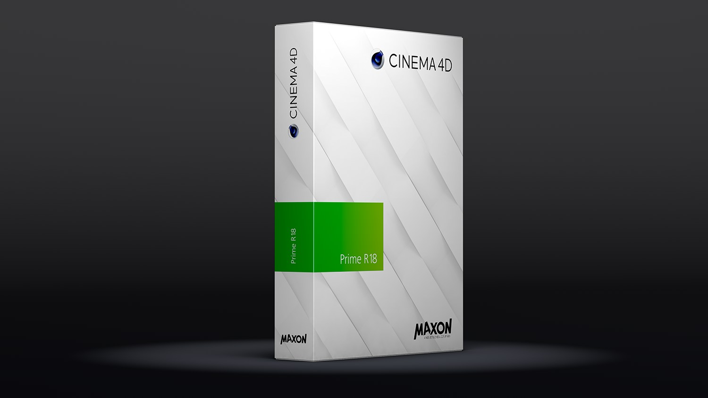

Function available in CINEMA 4D Prime
MAXON 手册

欢迎使用 CINEMA 4D Prime。
CINEMA 4D Prime中包含：
这个程序包括以下组件 (CINEMA 4D 包含有 BodyPaint 3D 功能):
上下文相关的帮助文档包含有完整的 MAXON 系列产品的文档。没有包含在你的版本中的组件是灰色的，文档会根据软件包含的版本来显示信息。注意，帮助系统是可以交互的，你可以直接从程序跳到相应地位置。参见
帮助功能。你的软件包中所不包含的特性和功能的描述也可能因此出现在帮助系统中。
语言：
帮助文档现在支持以下语言
- 英语
- 德语
- 西班牙语
- 法语
- 意大利语
- 日语
- 韩语
- 俄语
- 简体中文（施工中）